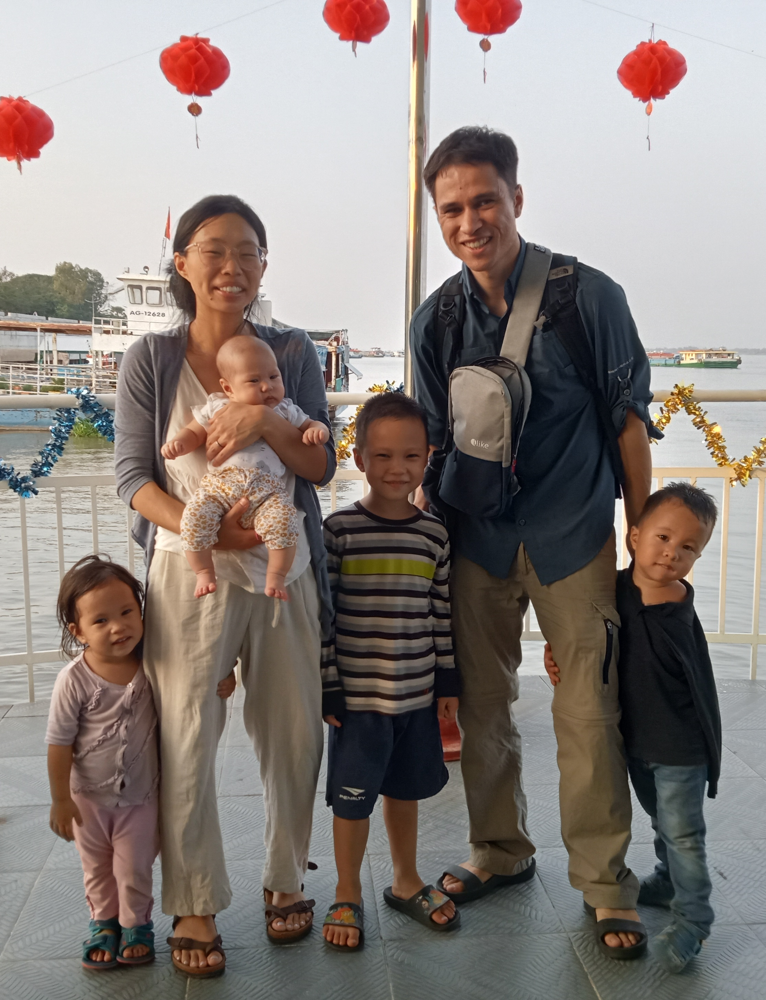

About Us

We were married in January 2017 and came to Cambodia August 2018 to strengthen the church here. We are hoping to have a long-term impact in pastoral and leadership training, focusing on knowing and loving the Word of God and on the Church and building it up. Besides coming alongside the local church, Ryan has also been teaching at the Phnom Penh Bible School since 2021. We are praying we will be able to serve the students, help them to truly know and love God’s Word and train them up in it.
We have been sent out through Action International. Action International Ministries (ACTION) is an evangelical, interdenominational missionary-sending agency that works in Africa, Asia, Europe, and Latin America. Their strategy for urban ministry involves evangelism, discipleship, and development. ACTION networks with local churches, national organizations and other mission agencies to reach people for Christ, and seeks to train them in Christian living as well as assist them in their physical and economic needs. For Ryan’s personal reflections on Action International and on missions agencies in general, click here.
Our main goal for this website is to facilitate partnership with us and the ministry in Cambodia.
For some of our older posts, our old website can be accessed here.
One Page Introduction
To download a copy or view full version, click on the buttons in the bottom right corner